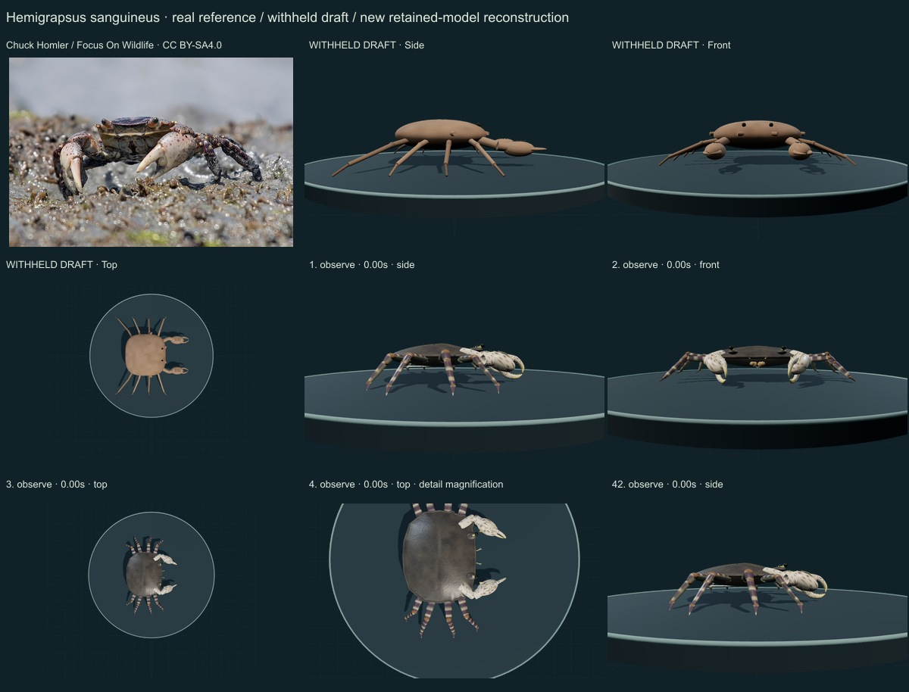
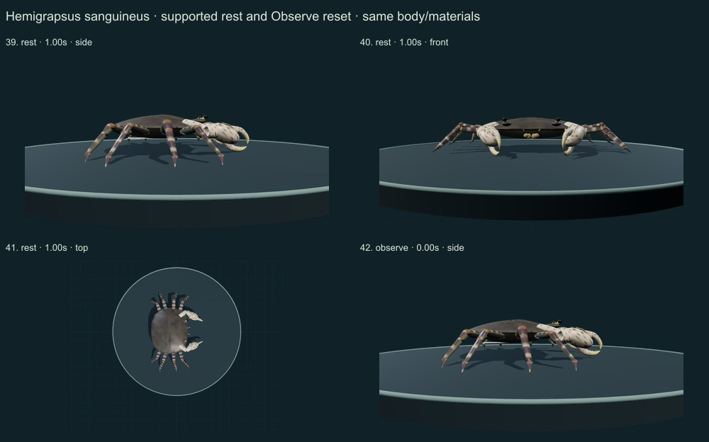
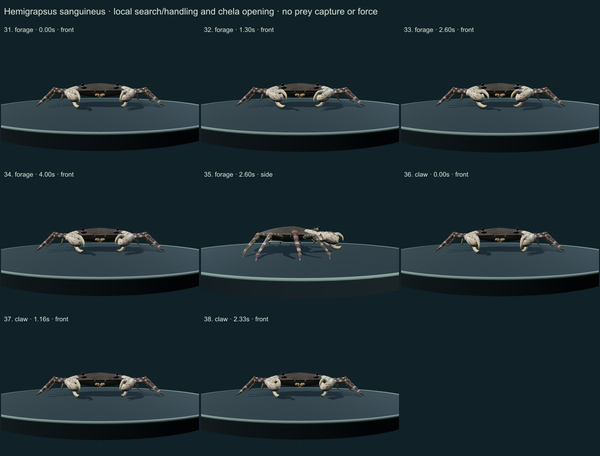
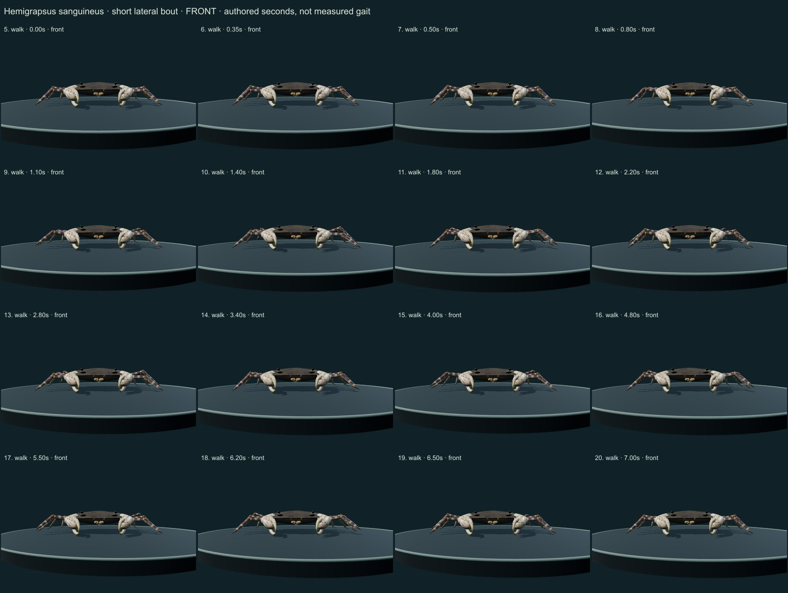
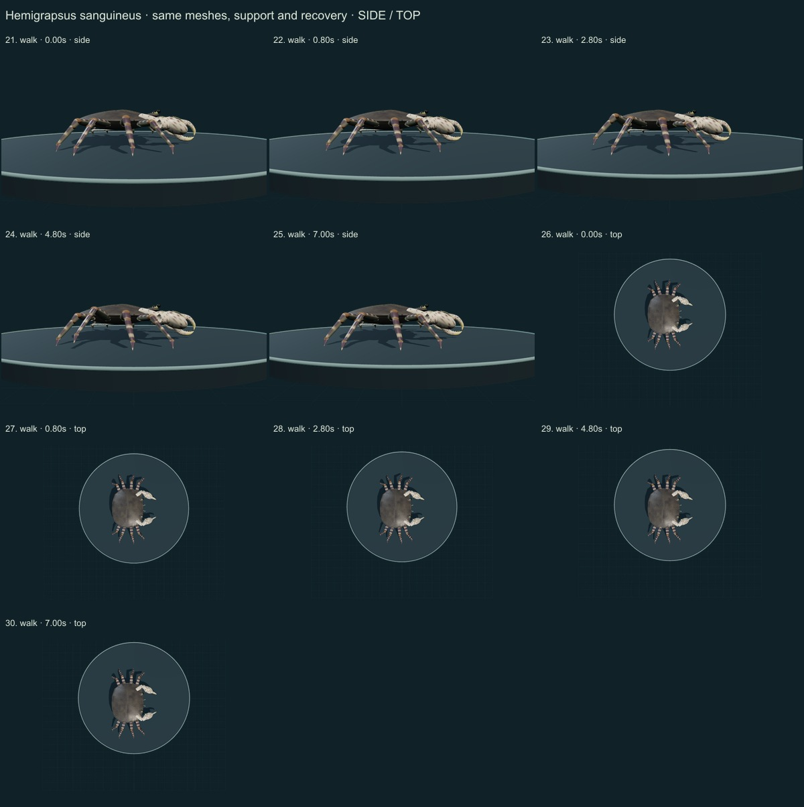

This three-species release reaches 257 / 550 after verified publication. 43 saved drafts remain withheld; 293 species remain to reach 550, including 250 without saved drafts. Release register. This record is an unmeasured educational reconstruction, with incomplete fine anatomy and biological dynamics.
Naturalis institutional description based on T.Sakai1939 was directly read, including three side teeth, entire front, adult-male swelling and short dactyli. CIESM pigment description and the authentic Chuck Homler/Focus On Wildlife photo were compared. Smithsonian’s indexed NEMESIS account supplies identity/ecology context, not a collection determination. GBIF accepted species concept checked.
Authentic photograph: Chuck Homler d/b/a Focus On Wildlife · CC BY-SA 4.0. Chuck Homler source identifies a shore crab in New Jersey. The front-facing image guides visible mottled dark shell, cream spotted palms and banded limbs; sex and taxon are not independently redetermined. Male swelling uses separate anatomical evidence, not a hidden determination from this photograph. Resized inside 1000 px, flattened and JPEG encoded; no generative alteration. Source/download/local checksums remain in the linked data. No generated photograph, independent species determination or material calibration is implied.
A distinct quadrangular shell has three anterolateral teeth per side, a broad entire front and depressed posterolateral cues. Shorter pointed dactyli, spotted symmetrical palms, an adult-male membranous swelling and higher supported body/claw carriage replace the generic rod-legged body.
Dark subtly varied shell, cream/red-spotted chelae, banded cuticle segments and pale ventral regions replace uniform brown. Numerical microrelief and sparse distal setae are original authored surfaces; no photo pixels are embedded.
Remaining: Exact suborbital stridulatory crest, swelling contour, teeth, joint plates, mouthparts, gills and underside remain incomplete or unmeasured. The selected photo does not independently establish sex; the male swelling has separate morphological support. Band/spot positions, optics and wear remain approximate and stylized at fine scale.
Same geometry and materials across a short authored lateral bout with planted support and lifted recovery, local chela/antennule handling, finger opening, quiet support and Observe reset. Eight pointed walking legs remain distinct from swimming paddles.
Limits: No species-measured coordinates, biological frequency, joint limits, forces, fluid dynamics, sensory physiology, food contact or ingestion. No validated sleep, development, courtship or migration. Fixed-length/support tests are software consistency checks, not empirical biomechanics.
42 actual final nonblank main-viewer side/front/top, enlarged detail and action/posture states inspected individually on labelled sheets. Superseded frames excluded. Authentic source photo compared; scoped evidence distinguished from complete source review. Qualitative author assessment, without specialist credentials or independent validation.





Software checks sample fixed segment lengths, planted stance consistency, support, finite poses, floor clearance, retained geometry/materials and reset. Passing them does not validate empirical biomechanics. There is no measured accuracy percentage, independent expert certification or physiological simulation. Existing 254 species objects, including credited wolf/tiger behavior meshes, are unchanged.
Original mesh/material/controller code is MIT; reference photographs retain their exact creator licenses. Legacy Protista/Monera are reporting conveniences, with modern lineage/domain fields retained. Recorded occurrences are not native-range boundaries.
Per-frame findings, source scopes and checksums · Open model
_Little_Egg_Harbor_Township,_New_Jersey,_USA.jpg){kind=link}